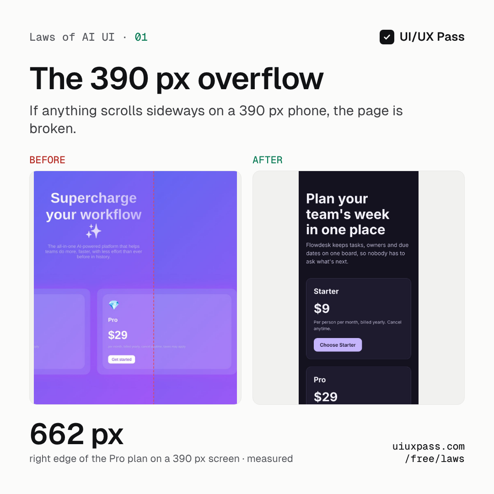
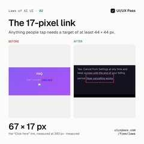
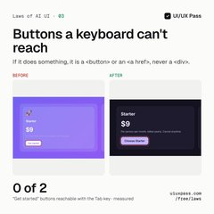
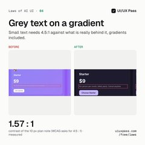
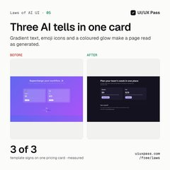
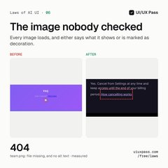

Laws of AI UI
AI builds interfaces fast and repeats the same mistakes. Each law below is one of them, shown on a real AI-made page, with the number we measured, the fix in code and a square card you can post. 6 laws so far; new ones every week.

- 01 · The 390 px overflowIf anything scrolls sideways on a 390 px phone, the page is broken.

02 · The 17-pixel linkAnything people tap needs a target of at least 44 × 44 px.
03 · Buttons a keyboard can't reachIf it does something, it is a <button> or an <a href>, never a <div>.
04 · Grey text on a gradientSmall text needs 4.5:1 against what is really behind it, gradients included.
05 · Three AI tells in one cardGradient text, emoji icons and a coloured glow make a page read as generated.
06 · The image nobody checkedEvery image loads, and either says what it shows or is marked as decoration.
Every number on these pages was measured, not estimated: in Chromium, at 1440 and 390 px wide, on 24 November 2026. Use the cards freely; a link back to the law is appreciated.